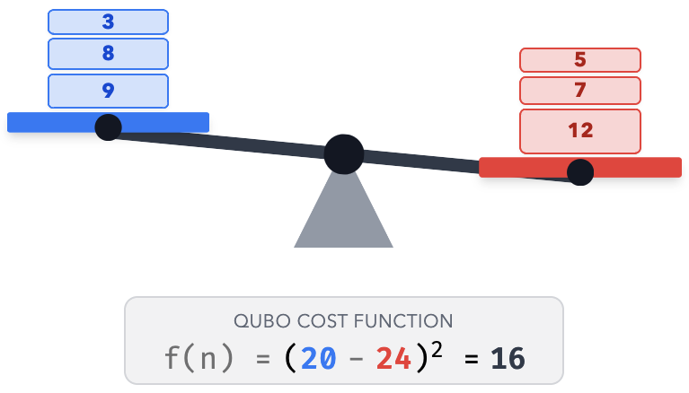
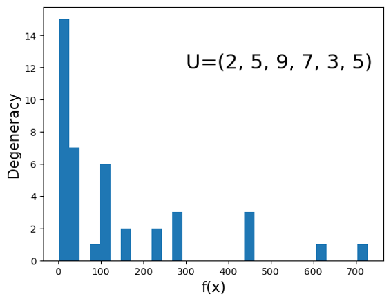
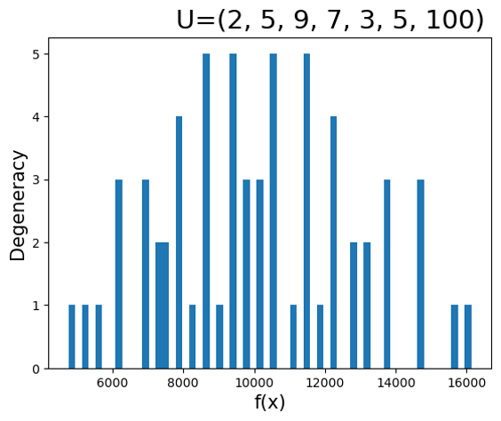
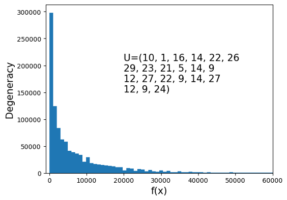
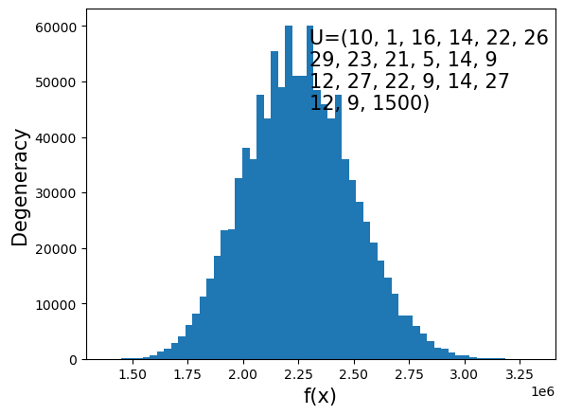
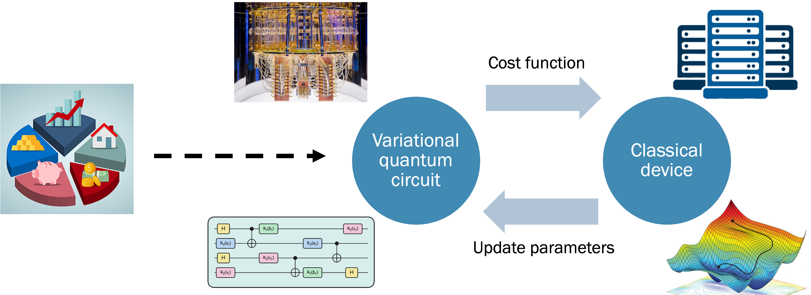
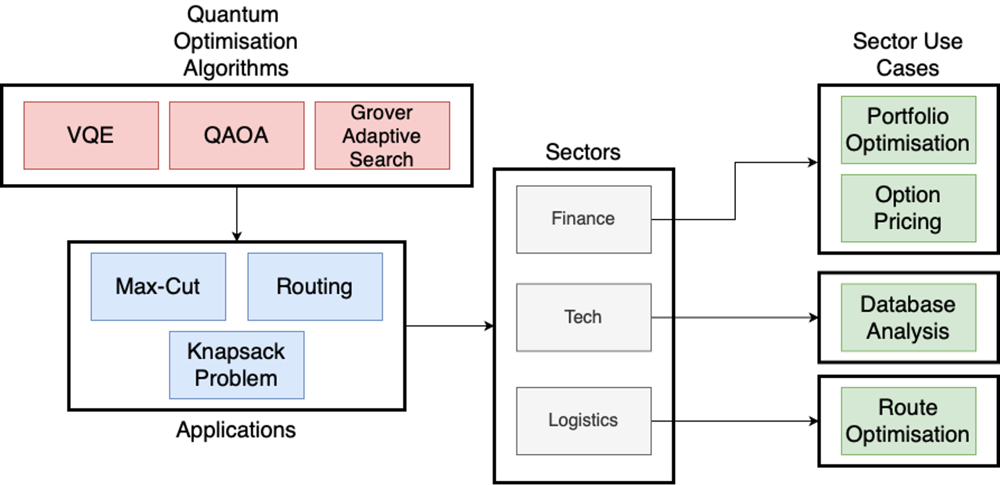
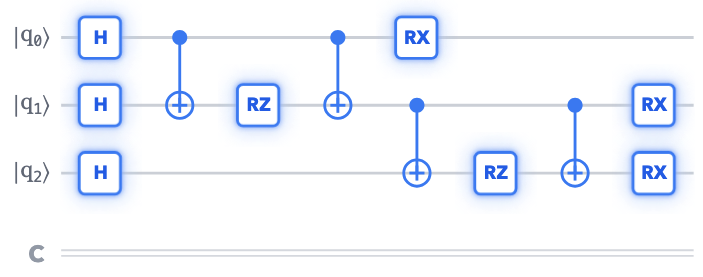

Lecture 10: NISQ Quantum Algorithms II#
Warning
These lecture notes are a work in progress and are not a replacement for watching the lecture video, it’s intended to be a supplementary reading after watching the lecture
Learning Outcomes
In this lecture we will be continuing our discussion on Noisy Intermediate Scale Quantum (NISQ) algorithms. The learning outcomes are:
Understanding the landscape of NISQ era algorithms
Understanding the requirements for the practical application of NISQ era algorithms
Contents
Quadratic Unconstrained Binary Optimization (QUBO)
Quantum Approximate Optimisation Algorithm (QAOA)
Recap: NISQ era algorithms#
NISQ stands for Noisy Intermediate Scale Quantum. This describes the current state of quantum hardware, with the largest quantum computers having between a few hundred and a few thousand qubits, all subject to noise.
To work with these systems, shallow quantum algorithms with a low number of qubits are needed. In most cases, these algorithms are embbeded into a classical algorithm, resulting in hybrid classical-quantum algorithms.
The most common type of NISQ algorithms are the variational quantum circuits (VQCs), which are quantum circuits that contain classical parameters that need to be classically optimised.
QUBO problem#
Quadratic Unconstrained Binary Optimisation, or QUBO is a class of mathematical problem, that has rather vast and diverse applications. The QUBO problem seeks minimization of a real valued function of several binary variables. More formally, one looks for minimization of the following function \(f\) of \(N\) variables -
or equivalently
where, \(Q\) is real symmetric matrix of size \(N\times N\) with entries \(Q_{ij}\), \({\bf v}\) is real valued vector of length \(N\), and \(c\) is a constant number. The function \(f\) is a function of \(N\) binary variable \({\bf x} = (x_1, x_2, x_3, \dots, x_N)\), i.e., \(x_i = 0, 1\). The matrix, vector and scalar \(({\bf Q}, {\bf v}, c)\) define the optimization problem.
The variables being binary is what makes minimization of \(f(x)\) interesting and difficult. Note that the minimization would have been easy if \({\bf x}\) was vector of continuous variables, as this would allow the use of gradient descent methods. However in the case where \({\bf x}\) is a vector of binary variables (0s and 1s), the function \(f\) is not differentiable (not smooth). Therefore we cannot calculate its gradient, and one has to resort to other methods for minimization.
QUBO example: Set partitioning.#
To get a better feel about how and what kind of problems get mapped to QUBO, let us look at the following problem. We have a set of \(N\) numbers \(U = \{n_1, n_2, n_3, \dots, n_N\}\), and we need to partition the set into two disjoint subsets \(A\) and \(B\) such that the sum of numbers in both the sets is as close to each other as possible.
Definition
Disjoint sets do not have any elements in common.
More formally, if
The we need to construct the sets \(A\) and \(B\) such that \(f_{\bf n} = (S_A - S_B)^2\) is minimum. Here \({\bf n} = (n_1, n_2, \dots, n_N)\) is the vector of numbers in the set. The function \(f_{\bf n}\) is the cost function.
Tip
An example of such problem in daily life can be partitioning a class of students into two sections, such that average grade of students in each section is almost same.
The process of finding optimal solution involves finding different partitionings of the the set \(U\) into \(A\) and \(B\), and computing the cost function, to seek minima using some algorithm. The cost function can be better formalised if we can define a definite set of variables for our problem.
For partitioning the set, we each of the numbers \(n_i\) in only one of the two sets \(A\), \(B\), so we can associate a binary variable \(x_i\) to \(n_i\), such that if \(x_i = 1\) if we put \(n_i\) into \(A\), and \(x_i = 0\) if we put \(n_i\) into \(B\). Then a vector \({\bf x} = (x1, x_2,\dots, x_N)\) of binary variables encapsulated the set partitioning, and different configurations of the vector \({\bf x}\) correspond to different ways of partitioning the set into \(A\) and \(B\).
With \({\bf x}\), we can also write the set sums as follows -
We can also define \(S = \sum_i n_i\) as sum of all the numbers in the set \(U\). Using the above expressions, we can compute the cost function as follows
If we define \(Q_{ij} = n_i n_j, v_i = -4S n_i\), and \(c = S^2\), then the cost function can be written in the matrix form as follows -
QUBO example: partitioning a set#
Let’s illustrate QUBO with an example. Consider a set of \(N\) numbers
Our goal is to divide this set \(U\) into two disjoint sets \(A\) and \(B\) such that the sums of the numbers in \(A\) and \(B\) are as close to each other as possible. So, if
then we need to minimise the following cost function:

Fig. 78 Partitioning a set of numbers into two groups. Aiming to minimize the cost function means we want their sums as close as possible, like balancing the scales.#
QUBO: set partitioning examples#
Optimise shipping
Imagine you have several boxes for shipping, and you want to put them on two delivery trucks.
Picking fair teams
In a classroom of students, you want to pick fair teams for a maths competition, and divide students based on their maths score.
Minimise scrappage
A construction crew has two standard 10 metre steel beams. They need to cut out several smaller, specific lengths of steel requested by the architect. The goal is to group the lengths into two piles so that the scrap metal left over is minimised.
How does the vector \({\bf x}\) partition the set of numbers?#
Let’s take example: \(U = \{n_1, n_2, n_3, n_4\}\).
Below are few examples of how \({\bf x}\) divides the set.
\({\bf x}\) |
\(S_A\) |
\(S_B\) |
|---|---|---|
\((1,1,1,0)\) |
\(\{n_1, n_2, n_3\}\) |
\(\{n_4\}\) |
\((1,0,1,0)\) |
\(\{n_1, n_3\}\) |
\(\{n_2, n_4\}\) |
\((0,0,1,1)\) |
\(\{n_3, n_4\}\) |
\(\{n_1, n_2\}\) |
\((0,1,0,0)\) |
\(\{n_2\}\) |
\(\{n_1, n_3, n_4\}\) |
\((0,0,0,0)\) |
\(\{\}\) |
\(\{n_1, n_2, n_3, n_4\}\) |
QUBO: classical algorithms#
Three classical approaches to the partitioning problem, in increasing order of sophistication:
Pick me first
A heuristic algorithm, where one puts a sorted list of numbers into two subsets \(A\) and \(B\), always adding the next number to whichever subset is currently lighter.
Greedy search (the blindfolded hiker)
This is where one divides the set randomly, and swaps the element that lowers the cost function by the maximum amount. It only moves strictly “downhill”, meaning it easily gets trapped in small ditches (local minima).
Simulated annealing (the bumpy tray)
This algorithm leverages the natural phenomenon of cooling. By pretending the cost function is the energy of a system, it starts by “shaking” the system to bounce out of bad solutions, slowly cooling until it settles in the deepest basin.
Heuristic approach: pick me first#
Sort items: Arrange the entire set of numbers in descending order, from largest to smallest.
Evaluate totals: Compare the current accumulated sum of subset \(A\) against subset \(B\).
Assign item: Place the next available number into whichever subset is currently lighter.
Terminate: Repeat the evaluation and assignment until the sorted list is empty.
flowchart TD
A([Start]) --> B["Sort items largest to smallest.<br/>Put first number in A"]
B --> C[Take out an item]
C --> D{"Is sum of A < sum of B?"}
D -- Yes --> E[Assign item to A]
D -- No --> F[Assign item to B]
E --> H{Items remaining?}
F --> H
H -- Yes --> C
H -- No --> G([End: assignment complete])
Greedy search#
Initialise state: Begin with an arbitrary or pre-existing distribution of items across the subsets.
Evaluate neighbours: Calculate the exact energy change for every possible single-item swap.
Execute best: Identify and perform the one swap that yields the maximum energy reduction.
Terminate: Repeat the search until no single move can further reduce the total energy.
flowchart TD
A([Start]) --> B["Divide the set<br/>randomly into A and B"]
B --> C["Evaluate all possible<br/>single swaps"]
C --> D{"Does best swap<br/>lower energy?"}
D -- Yes --> E[Execute the best swap]
E --> C
D -- No --> F([End: stuck in a local minimum])
Simulated annealing#
Initialise system: Define a starting temperature that allows high volatility, and a cooling rate.
Evaluate random: Select one random item and calculate the exact energy change if it switched sides.
Accept or reject: Swap immediately if the energy improves, or with a probability that depends on the temperature if it worsens.
Terminate: Repeat the cycle, lowering the temperature each time, until the system freezes.
flowchart TD
A([Start]) --> B[Set temperature T]
B --> C[Select one random swap]
C --> D{Does it lower energy?}
D -- Yes --> E[Execute swap]
D -- No --> F{"Random() < exp(-ΔE/T)?"}
F -- Yes --> E
F -- No --> G[Reject swap]
E --> H[Lower temperature T]
G --> H
H --> C
Small-size heuristics: limitations#
Heuristic approaches work well for small sets (small problem sizes), but they don’t scale well.
They also assume that the optimal solution divides the set into subsets \(A\) and \(B\) of nearly equal size.
The figures below show histograms of the cost function over all possible partitions of a set. The \(x\)-axis shows the cost function value \(f\), and the \(y\)-axis shows the number of partitions that have that same value of \(f\), called the degeneracy of \(f\).

Fig. 79 Histogram of the cost function over all partitions of a balanced set of small numbers. Many partitions share the same cost, so the degeneracy is high.#

Fig. 80 The same set after adding a single large element, 100. The distribution changes completely and the degeneracy is gone.#
A “balanced” set has high degeneracy.
Adding a single element, 100, completely changes the distribution, and the degeneracy disappears.
The larger degeneracy makes the problem harder.
An imbalanced set usually results in optimal subsets that are imbalanced as well.
Aspects of QUBO#
For QUBO, since the vector components are binary, there is no directional or visual guidance for the optimisation.
The search must explore brutal combinatorics: there are \(2^N\) possibilities for the binary vector \({\bf x}\).
For the set partitioning problem, the complexity depends on the distribution of the numbers.
In a balanced, uniform set, the number of combinatorial options explodes.
Definition: degeneracy
A function is degenerate if different independent variables, or configurations, produce an identical result.
Formally, a function \(f({\bf x})\) is degenerate at \({\bf x}\) if there is at least one \({\bf x}' \ne {\bf x}\) such that
For a function of discrete variables, degeneracy is best viewed as the number of configurations that share a given value of the function.
Next we look at how this affects the complexity of QUBO, and what the distribution looks like.
Scaling in QUBO#
As the size \(N\) increases, the discrete landscape of possible set partitions scales as follows. We can partition the set into \(A\) and \(B\) containing \((1, N-1)\) elements, \((2, N-2)\) elements, and so on up to \((\frac{N}{2}, \frac{N}{2})\) elements.
in \(A\) |
in \(B\) |
Combinations |
|---|---|---|
0 |
\(N\) |
\(\binom{N}{0}\) |
1 |
\(N - 1\) |
\(\binom{N}{1}\) |
2 |
\(N - 2\) |
\(\binom{N}{2}\) |
3 |
\(N - 3\) |
\(\binom{N}{3}\) |
⋮ |
⋮ |
⋮ |
\(k\) |
\(N - k\) |
\(\binom{N}{k}\) |
⋮ |
⋮ |
⋮ |
\(N/2\) |
\(N/2\) |
\(\tfrac{1}{2}\binom{N}{N/2}\) |
Binomial coefficient
The symbol \(\binom{N}{k}\) denotes the number of ways to choose \(k\) objects from a list of \(N\):
For even \(N\), the total number of distinct partitions is
This grows exponentially, which is why we need specialised methods for finding QUBO solutions.

Fig. 81 Scaling for the balanced set of small numbers.#

Fig. 82 Scaling for the set containing the single large element.#
Key aspects of QUBO#
Quadratic objective mapping
QUBO encodes complex combinatorial optimisation problems into a unified mathematical structure of linear biases (diagonal elements) and pairwise interactions (off-diagonal elements):
The components are binary: \(x_i \in \{0, 1\}\). One can use \(x_i^2 = x_i\) to absorb linear terms into the diagonal of \(Q\).
However, we have no visual or directional insight into the landscape of the cost function.
Structural degeneracy
QUBO problems can have broad, flat energy landscapes, where multiple distinct binary configurations yield the exact same global minimum. This heavily impacts solver trajectories and optimisation dynamics.
The quantum advantage#
Classical algorithms explore the \(2^N\) possible configurations sequentially. A quantum processor can instead encode the problem and prepare a superposition over all \(2^N\) basis states at once.
Using the Quantum Approximate Optimisation Algorithm (QAOA), we steer the amplitudes with interference so that low-cost configurations become more likely to be measured.
This raises the next question: how do we map a classical QUBO matrix into a quantum circuit?
QAOA#
QAOA: the hybrid approach#
The Quantum Approximate Optimisation Algorithm (QAOA) is a technique for finding approximate solutions to combinatorial optimisation problems like QUBO.
It is a hybrid quantum-classical variational algorithm, which splits the workload into a continuous feedback loop:
The quantum device runs a parameterised circuit to prepare a state and measure the expected QUBO cost.
The classical device takes that measurement and runs a classical optimisation (e.g. gradient descent) to update the circuit’s parameters for the next iteration.

Fig. 83 The variational quantum-classical loop.#

Fig. 84 Optimisation map.#
QUBO in quantum: the Ising bridge#
Classical algorithms evaluate the landscape blindly, one configuration \({\bf x}\) at a time. If we map the variables onto a quantum system, we can prepare a superposition of all configurations and use interference to favour the low-cost ones.
To do this, we map the binary variables \(x_i \in \{0, 1\}\) to Ising variables \(z_i \in \{+1, -1\}\):
so \(x_i = 0\) corresponds to \(z_i = +1\) and \(x_i = 1\) to \(z_i = -1\). Substituting \(z_i\) for \(x_i\) turns the QUBO cost function into the Ising model:
where the parameters \(J_{ij}\) and \(h_i\) depend on the classical \(Q\) matrix of the QUBO problem. Solving the QUBO is now equivalent to finding the ground state of the Ising model, which we can set up on a quantum computer and tackle with an iterative scheme like VQE.
Deriving the Ising coefficients#
Take a pure quadratic cost function, with the linear terms already absorbed into the diagonal and \(Q'\) symmetric:
Substituting \(x_i = \frac{1}{2}(1 - z_i)\) gives
Grouping terms, we have:
Couplings \(J_{ij}\): the Ising couplings are one quarter of the classical ones, \(J_{ij} = \dfrac{Q'_{ij}}{4}\).
Local fields \(h_i\): there is an additional linear term, \(h_i = -\dfrac{1}{2} \sum_{j} Q'_{ij}\).
Constant shift \(c\): a constant that we can ignore, since it does not change which state has the lowest energy, \(c = \sum_{ij} \dfrac{Q'_{ij}}{4}\).
The cost Hamiltonian#
Once we have the Ising form, replacing the numbers \(z_i\) with Pauli-\(Z\) operators is straightforward. This gives the cost Hamiltonian for our QUBO problem, turning the cost function into a physical energy landscape:
Finding the optimal partition is now equivalent to finding the ground state (lowest energy state) of this quantum system.
The QAOA engine#
QAOA guides the superposition towards the correct answer using two alternating quantum operators, applied \(p\) times.
1. The cost operator
Evaluates the QUBO energy of every state in the superposition.
It doesn’t change the probabilities, but it rotates the phase of each state according to how “good” the solution is.
2. The mixer operator
Creates quantum interference (Pauli-\(X\) rotations).
It uses the phase differences created by the cost operator to amplify the probabilities of good solutions and suppress the bad ones.
The resulting ansatz is
Constructing QAOA: cost and mixer#
Equal superposition. We start from an equal superposition of all possible set partitions, prepared with Hadamard gates:
\[|\psi_0\rangle = |+\rangle^{\otimes N} = \frac{1}{\sqrt{2^N}} \sum_{x=0}^{2^N-1} |x\rangle\]The cost operator (scoring). We apply \(H_C\) for an angle \(\gamma\). This imparts a phase to each state based on its QUBO energy. Crucially, phase alone does not change the measurement probabilities.
\[U_C(\gamma) = e^{-i \gamma H_C}\]The mixer operator (interference). We apply the mixer Hamiltonian for an angle \(\beta\). This creates quantum interference, amplifying good partitions and suppressing bad ones.
\[ H_M = \sum_{j=0}^{N-1} X_j \quad\Longrightarrow\quad U_M(\beta) = e^{-i \beta H_M}\]Full QAOA ansatz. Repeat steps 2 and 3 for \(p\) layers:
\[|\psi(\vec{\gamma}, \vec{\beta})\rangle = \prod_{k=1}^p U_M(\beta_k) U_C(\gamma_k) |+\rangle^{\otimes N}\]
Compiling to quantum gates#
Here is how a single QAOA layer (\(p=1\)) is executed on hardware.
Initialisation (superposition). Apply a Hadamard gate to every qubit starting in \(|0\rangle\), creating \(|+\rangle^{\otimes N}\).
The cost layer (\(ZZ\) couplings). Each phase operator \(e^{-i \gamma J Z_i Z_j}\) is compiled into an entangling block:
CNOT\(\rightarrow\)RZ\(\rightarrow\)CNOT.The mixer layer (\(X\) rotations). The transverse-field term \(e^{-i \beta X}\) maps directly to single-qubit
RXrotations, applied independently to every qubit.

Fig. 85 A single QAOA layer (\(p=1\)): Hadamards, then CNOT–RZ–CNOT blocks for the cost layer, then RX rotations for the mixer.#
The hybrid variational loop#
The goal is to iteratively optimise the angles \((\vec\gamma, \vec\beta)\) so that low-cost partitions are the most likely measurement outcomes.
Quantum initialisation (QPU). Initialise \(N\) qubits in the equal superposition \(|+\rangle^{\otimes N}\) with a layer of Hadamard gates.
Apply the QAOA ansatz (QPU). Apply \(p\) alternating layers of the cost operator \(U_C(\gamma)\) and mixer operator \(U_M(\beta)\). The hardware is now in the parameterised state \(|\psi(\vec\gamma, \vec\beta)\rangle\).
Measurement and expectation (QPU → CPU). Measure the qubits in the computational basis. Estimate the expected cost \(E(\vec\gamma, \vec\beta) = \langle \psi | H_C | \psi \rangle\) by repeating the circuit many times (shots).
Classical optimisation (CPU). Use a classical optimiser to suggest new angles \((\vec\gamma, \vec\beta)\) that lower the cost. Loop back to step 1 with the new angles until \(E(\vec\gamma, \vec\beta)\) converges to a minimum.
Illustrative example: 3 qubits#
Let’s partition the set \(S = \{2, 3, 5\}\).
We need exactly 3 classical bits (\(x_0, x_1, x_2\)) to assign each number to one of the two subsets.
The optimal partition splits the set perfectly, with zero energy: \(\{2, 3\}\) and \(\{5\}\).
Building the QUBO#
1. The cost function. The cost function is \(f(x) = (S_A - S_B)^2\), where
which gives
2. Algebraic expansion. Ignoring the overall factor of 4, expanding the square gives constants, linear terms and quadratic pairs:
3. The pure quadratic \(Q\) matrix. Since \(x_i \in \{0,1\}\), we have \(x_i^2 = x_i\), so we can absorb the linear terms into the diagonal:
\(x_0\): \(-20 + 4 = -16\)
\(x_1\): \(-30 + 9 = -21\)
\(x_2\): \(-50 + 25 = -25\)
The resulting \(Q\) matrix (ignoring the \(+25\) offset) is
If we want to use \(Q\) in an unrestricted sum \(\sum_{ij}\), the off-diagonal entries are halved and the symmetric form is used:
Next, we convert the classical \(Q\) matrix into the quantum cost Hamiltonian \(H_C\).
The Ising Hamiltonian#
1. The physical energy landscape. Substituting \(x_i = \frac{1 - z_i}{2}\), the cost function becomes
after replacing \(z_i\) with Pauli-\(Z\) operators. The factor of 4 in \(f\) cancels the factor of \(\frac14\) from the substitution, so \(H_C\) is equal to the original cost function.
2. Expanding the quantum operators. Just as before, we expand the square. In this case \(Z_i^2 = I\) (the identity):
3. The final hardware parameters. The \(Z^2\) terms collapse into a constant (\(4 + 9 + 25 = 38\)):
Notice that the linear biases \(h_i\) have vanished. The quantum computer only needs to apply pairwise couplings \(J_{ij}\) of strength \(12\), \(20\) and \(30\) (up to the constant offset, which we can drop).
Execution and outcome#
1. The cost circuit. Because there are no linear \(h_i\) terms, we only need three entangling blocks to represent the three couplings in \(U_C = e^{-i \gamma H_C}\):
CNOT\(\to R_z(24\gamma) \to\)CNOT(for \(12Z_0Z_1\))CNOT\(\to R_z(40\gamma) \to\)CNOT(for \(20Z_0Z_2\))CNOT\(\to R_z(60\gamma) \to\)CNOT(for \(30Z_1Z_2\))
2. The mixer circuit. \(U_M\) is applied immediately after the cost layer. It is a single \(R_x(2\beta)\) rotation on every qubit, which lets the algorithm explore new partitions.
3. The variational handoff (QPU → CPU).
Sample (QPU): run the circuit many times (“shots”) to measure a frequency distribution of classical bitstrings.
Score (CPU): calculate the classical QUBO cost of each measured bitstring and compute the weighted average (the expectation value).
Optimise (CPU): a classical optimiser (e.g. COBYLA) adjusts \(\gamma\) and \(\beta\) to lower this average, repeating until convergence.
The optimal solutions are \(|110\rangle\) or \(|001\rangle\), which are the two ways of assigning \(\{2,3\}\) to one subset and \(\{5\}\) to the other.
QAOA vs. VQE#
Both are hybrid quantum-classical algorithms with a parameterised loop, but they target different problems and use different circuit architectures.
VQE (Variational Quantum Eigensolver) |
QAOA (Quantum Approximate Optimisation Algorithm) |
|
|---|---|---|
Goal |
Find the lowest-energy state (ground state) of a quantum physical system, such as a molecule’s electron configuration |
Find the maximum or minimum of a classical combinatorial cost function |
Ansatz (circuit) |
Physically inspired circuits (e.g. UCCSD) or “hardware-efficient” templates; the gate structure is relatively rigid |
A strictly “problem-inspired” alternating circuit (\(p\) layers of cost and mixer operators); the depth \(p\) controls the approximation quality |
Primary domain |
Quantum chemistry, materials science, condensed matter physics |
Logistics, finance, routing, set partitioning (QUBO) |
Wrap-up#
QUBO: we learnt the formulation, its applications, and the difficulties caused by its discrete quadratic energy landscape.
The Ising bridge: we translate classical bits into quantum spins.
The QAOA ansatz: we alternate scoring partitions (cost layer) with driving quantum interference (mixer layer).
The hybrid loop: the QPU samples probabilities, and the CPU calculates the average cost and optimises the angles.